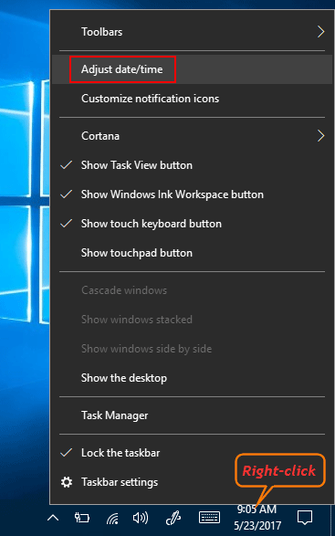
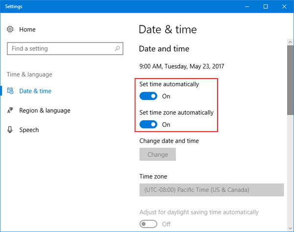
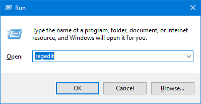
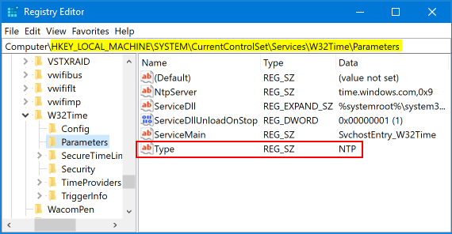
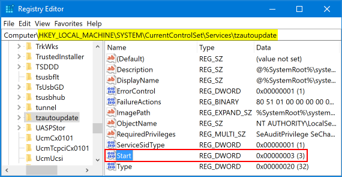

NTP on Windows 10
https://www.top-password.com/blog/enable-or-disable-set-time-zone-automatically-in-windows-10/
Windows 10 doesn’t update date and time automatically? Windows 10 set time zone automatically not working? By default, Windows 10 determines your location based on your IP address, and this location will be used to set your time zone. But, if Windows has problem detecting your IP address accurately, it may set a wrong time zone and you have to turn off the “Set Time Zone Automatically” feature. In this tutorial we’ll show you 2 simple ways to enable or disable “Set Time (Zone) Automatically” in Windows 10.
Method 1: Enable or Disable “Set Time (Zone) Automatically” in Windows 10 Using Settings
-
Right-click on the time display on bottom-right of the taskbar and then choose Adjust date/time

-
This will open the Date & time page in the Settings window. In the right pane you can see these two settings: Set time automatically and Set time zone automatically.

-
Just toggle slider button to the On or Off position.
Method 2: Enable or Disable “Set Time (Zone) Automatically” in Windows 10 Using Registry Editor
-
Press the Windows logo key + R to open the Run box. Type regedit and hit Enter.

-
When the Registry Editor opens, navigate to the following key:
HKEY_LOCAL_MACHINE\SYSTEM\CurrentControlSet\Services\W32Time\Parameters
-
In the right pane you can see a string value named Type. If you want Windows 10 to set time automatically, set its value data to NTP. To disable automatic time synchronization, change its value to NoSync.

-
In order to enable or disable “Set Time Zone Automatically” in Windows 10, navigate to the following key:
HKEY_LOCAL_MACHINE\SYSTEM\CurrentControlSet\Services\tzautoupdate
-
Double-click the 32-bit DWORD Start in the right pane. Set its value data to 3 if you want to make Windows 10 set time zone automatically. If you want to disable “Set Time Zone Automatically” in Windows 10, just set the value to 4.

-
Reboot your computer for the registry changes to take effect.